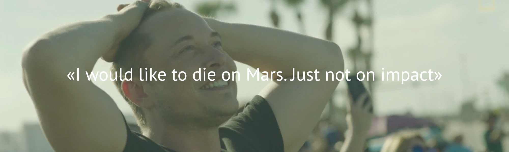

SolarCity
SolarCity
— американская энергетическая компания, расположенная в Сан-Матео, Калифорния, дочернее предприятие Tesla. В перечень основных услуг компании входят проектирование, финансирование и установка солнечных энергосистем. Штат компании составляет более 13,000 человек.
История
Транспорт SolarCity с обновленным логотипом
Компания SolarCity была основана в июле 2006 года братьями Питером и Линдоном Райвами. Идея начать бизнес в области солнечной энергетики пришла их кузену Илону Маску, ставшему во главе компании и оказавшему помощь с запуском проекта.
SolarCity удерживает лидерство в сфере услуг по установке солнечных панелей в Калифорнии с 2007 года — первого полного года работы компании (согласно данным California Solar Initiative), а также стала номером один среди компаний, занимающихся установкой солнечных панелей частным пользователям в США в 2013 году (согласно данным GTM Research). В 2013 году журнал Solar Power World поставил SolarCity на второе место среди всех компаний, занимающихся установкой солнечных панелей в США.
Расположение
Штаб-квартира SolarCity расположена в Сан-Матео, Калифорния, однако компания использует дистрибутивную модель, доверяя непосредственую установку своих систем местным операционным центрам.
Будущее SolarCity
С каждым днем в «Солнечный город» приходят сотни клиентов, заключаются десятки контрактов, на счета поступают сотни тысяч долларов. Маску и руководителям SolarCity будет чертовски сложно, когда традиционные поставщики энергии поймут, что деньги огромной рекой утекают в другом направлении.
Акции Solar City
Сентябрь 2013 – общее число контрактов достигло 72,5 тысяч. В компании заявили, что суммарный доход по ним составит $1,737 миллиарда. 11 Октябрь 2013 – компания опубликовала отчет, в котором заявила о расширенной мощности своих новых батарей – 278 МВатт. В дальнейшем – ее увеличение до уровня 475-525 МВатт. В этот же день акции Solar City взлетели на 23% и закрылись на отметке в $47. Для сравнения, IPO проходило по цене $8 акцию.
SolarCity
Лизинг солнечных панелей:
В 2008 году SolarCity предложила опцию лизинга устанавливаемых солнечных панелей для частных домохозяйств. При переходе на энергию солнца ежемесячный лизинговый платёж, который оплачивают домовладельцы, оказывается даже ниже, чем счета за электроэнергию от коммунальных компаний.
Коммерческое производство солнечной энергии:
В мае 2008 года компания завершила строительство самой крупной на тот момент солнечной установки, расположившейся в северном кампусе eBay в Сан-Хосе. В июле того же года SolarCity построила еще более крупную солнечную установку для British Motor Car Distributors в Сан-Франциско, состоящую из 1 606 солнечных панелей. В 2009 году SolarCity предоставила новые финансовые опции для бизнеса и построила несколько объектов в сфере солнечной энергетики для таких крупных организаций, как Walmart, Intel, а также для армии США. 21 марта 2013 года SolarCity объявила о планах открытия нового филиала в Неваде при поддержке правительства штата.
Зарядные станции электромобилей:
SolarCity пришла на рынок зарядных станций для электромобилей, выкупив бизнес SolSource Energy у Clean Fuel Connections. В 2009 году сделка была завершена. Параллельно с этим было объявлено о партнёрстве с Rabobank с целью обеспечить владельцев транспорта Tesla Motors, следующих по Маршруту 101 (США) между Сан-Франциско и Лос-Анжелесом возможностью бесплатной зарядки электромобилей. При этом поощрялось привлечение сторонних производителей, использующих ту же технологию зарядки. В 2011 году компания объявила о планах установить зарядные станции для широкого спектра электротранспорта на всей территории предоставления своих услуг.
Услуги по повышению энергоэффективности:
В 2010 году SolarCity приобрела компанию Building Solutions, занимавшуюся аудитом в области использования электроэнергии для домашних нужд, и начала предоставлять услуги по повышению энергоэффективности. В марте 2012 года SolarCity достигла соглашения с Admiral's Bank of Boston с целью предоставления новых кредитных опций для финансирования услуг по энергоэффективности и охвату всего восточного побережья США.
Хранение электроэнергии:
В 2017 году Tesla Motors и Panasonic состоится открытие завода по производству аккумуляторных батарей в Неваде. Планируется разработка устройства под названием Powerwall, которое будет аккумулировать электроэнергию и использоваться в качестве источника резервного питания. Устройство будет продаваться, в том числе, и компании SolarCity. В будущем SolarCity собирается запустить пилотный проект по установке комплектов батарей ёмкости на 10 киловатт-час среди 500 домохозяйств Калифорнии.
Технология установки:
SolarCity использует технологию установки солнечных панелей, разработанную компанией Zep Solar, которую она приобрела в 2013 году. Данная фирма известна в первую очередь благодаря разработке метода, позволяющего «стыковать» устанавливаемые солнечные панели друг с другом в более сжатые сроки. Также при применении данной технологии отпадает необходимость наличия монтажных реек при установке панелей на большинстве типов крыш.
Производство:
В июне 2014 года, сразу после покупки Silevo — известного производителя высокоэффективных солнечных модулей — SolarCity обнародовала планы по строительству нового производственного комплекса в Баффало, штат Нью-Йорк, в сотрудничестве с Политехническим институтом Государственного университета Нью-Йорка. С запланированной совокупной мощностью производимых солнечных панелей в один гигаватт, новый комплекс может стать крупнейшим подобным заводом в США и потягаться с китайскими производителями. Старт проекту был дан в сентябре 2014 года с ориентировочной датой окончания строительства в начале 2016 года.
Ожидается, что комплекс станет крупнейшим в своём роде в Западном полушарии.
Wall
Powerwall
— литий-ионный аккумулятор, разработанный компанией Tesla Motors. Аккумулятор предназначен для сохранения энергии в целях бытового использования, сдвига нагрузки потребления, а также резервного питания.
История
30 апреля 2015 года было объявлено, что цены для установщиков стартуют от $3000 за батарею 7 кВт·ч и от $3500 за 10 кВт·ч. В стоимость не включены инверторы и установка. Аналитики, ожидавшие, что стоимость батареи 10 кВт·ч будет достигать $13000, предрекают, что меньшая цена вынудит конкурентов следовать за ценой Powerwall (Tesla).
Устройства будут продаваться в том числе компании SolarCity, которая запустила пилотный проект в 500 домах штата Калифорнии по использованию аккумуляторов 10 кВт·ч.
Большая батарея на 100 кВт·ч называется PowerPack. Она доступна для заказа промышленными потребителями, цена за пункт достигает 250 $/(кВт·ч).
По состоянию на май 2015 г. производитель устройств загружен заказами до середины 2016 г. За первые несколько недель после презентации продукта предварительных заказов на PowerWall поступило на 50 000 штук ($179 миллионов), а на PowerPack — 25 000 штук ($625 миллионов). Таким образом, совокупная стоимость заказов превысила $800 миллионов.
Характеристика:
После Марта 2016 доступна только 6.4 кВт*ч версия.
Вес: 100 кг;
Температура использования: от минус 20 °C до 43 °C;
Напряжение: 350–450 вольт;
Ток: 9А
Мощность: 3.3 кВт
Размер: 1300×860×180 мм;
Модели: 6.4 кВт·ч (изначально - 10 кВт·ч или 7 кВт·ч);
Цена: 3500$ / 3000$;
Гарантия: 10 лет
В 2016 году генеральный директор Tesla представил новую модель солнечных батарей и улучшенную модель Powerwall в Лос-Анджелесе. Солнечные батареи, встраиваемые в крышу дома, кажутся невидимыми благодаря особым плитам разного цвета и текстуры, которые покрывают всю крышу. По словам Илона Маска, секрет этих плит в специальном покрытии и угле обзора. Стекло из кварца в панелях очень прочное, поэтому батарея не изнашивается. Энергонакопитель стоит 5 500 долларов, его мощность равна 14 кВт⋅ч. Этого достаточно, чтобы освещать четырёхкомнатный дом в течение дня и отапливать помещение ночью.
черепица
Солнечная черепица Tesla:
Еще летом 2016 года, один из основателей и нынешний глава Tesla Motors, Илон Маск, предложил объединить компании SolarCity и Tesla Motors. Лидер в установке солнечных панелей в Калифорнии, энергетическая компания SolarCity, уже на протяжении десятка лет удерживает высокую лидерскую позицию, и сегодня занимает второе место по США.
И вот, еще до конца года, 17 ноября, состоялась результативная встреча Илона Маска с акционерами, вопрос слияния был решен положительно, и осталась лишь утрясти юридическую сторону этого грандиозного многообещающего шага.
По замыслу Маска, уже летом 2017 года потребителям будет представлена возможность купить для своих домов солнечную черепицу Solar Roof. Черепица будет представлять собой сборную солнечную панель, и по виду с земли будет очень похожа на обычную черепицу, с той лишь разницей, что теперь крыша сможет генерировать электроэнергию.
Если обычные солнечные панели с земли смотрятся не очень эстетично, то черепица Solar Roof специально изготовлена так, чтобы выглядеть более естественно, и текстуру каждый заказчик сможет выбрать на свой вкус.
Уже сейчас прогнозируется производство четырех текстур:
гладкое стекло, тосканское стекло, текстурированное стекло и шифер. Если посмотреть на материал сверху — будет виден солнечный элемент.
Tesla превратила солнечные панели в черепицу
Черепица Solar Roof была представлена Илоном Маском 28 октября на презентации Лос-Анджелесе.
На данный момент известно, что каждый кусочек черепицы состоит из трех слоев: высокоэффективного солнечного элемента, пленки с текстурой, прозрачной для солнечного света, и защитного стекла, специально разработанного научно-техническим подразделением Tesla Motors. Защитное стекло — не обычное стекло.
Стекло высокопрочное, при этом его плотность до пяти раз ниже чем у бетона, то есть черепица Solar Roof окажется в три-пять раз легче традиционной черепицы. Еще одно важное достоинство — особый генерирующий слой, - даже при высоких температурах эффективность элемента падать не будет, а ведь это главный недостаток традиционных солнечных батарей.
 Tesla
Tesla SpaceX
SpaceX